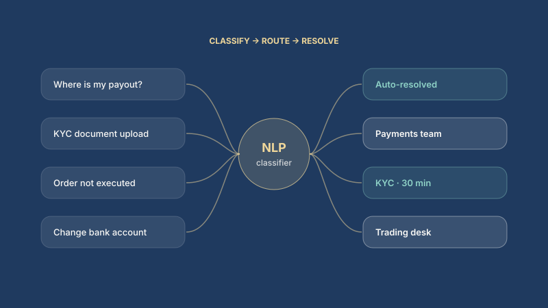

New investor
End customerOpening a first trading account.
Goals
- Start investing the same day
Pain points
- KYC verification taking days
Needs: Fast, automated document verification.
Servicing Platform · Automation
Transformer-based query classification, intelligent routing and automated document verification for 10M+ brokerage customers.

Business context
Support for 10M+ brokerage customers across email and chat was manual and slow to route, producing repeat contacts and long resolution times. KYC document checks for onboarding and fraud verification took days.
My role
From the COO's office, defined and delivered the NLP-powered CRM and automated KYC programs, working across operations, support, compliance and data science.
Product strategy
Tech architecture
Incoming email and chat flow through an NLP classification layer that assigns intent and routes to queues or automated resolvers. A separate document pipeline classifies uploads, extracts entities and runs fraud checks before KYC approval.
Business impact
Of manual ticket handling automated through classification and routing.
KYC and fraud verification time through document AI.
First-attempt routing reduced failed and repeat interactions.
Employee of the Quarter and Design Lab winner (₹1 Lakh prize) for AI-driven product launches.
Key decisions
AI architecture
Two AI pipelines share one CRM: transformer models classify and route every email and chat, and a document AI pipeline verifies KYC uploads in minutes.
Scroll sideways to see the full diagram on small screens.
Request lifecycle
Component roster
| Component | Responsibility | Guardrail |
|---|---|---|
| Query classifier | Assigns intent to every email and chat | Confidence threshold, fallback to agent |
| Document classifier | Identifies KYC document types | Rejects unreadable or mismatched files |
| Entity extraction | Pulls names, IDs and dates from documents | Cross-checks against account data |
| Router | Sends work to the right resolver or team | Ownership rules, SLA timers |
| Automated resolvers | Answer common requests end to end | Limited to approved intents |
Product research
Research analysed the ticket corpus and shadowed support agents to understand why customers contacted support more than once.
Personas
Opening a first trading account.
Needs: Fast, automated document verification.
Trades frequently and depends on payouts and order execution.
Needs: Right team on the first attempt.
Handles email and chat queries.
Needs: Pre-classified tickets and automated answers for common asks.
Verifies identity and fraud checks.
Needs: Automation with a full audit trail.
Insights to decisions
Repeat contacts were driven mostly by misrouting.
Product decisionClassification and routing came before full automation.
Slow KYC was the biggest barrier to activation.
Product decisionDocument AI cut verification from 2 days to 30 minutes.
Agents distrusted low-confidence automation.
Product decisionHuman-in-the-loop below a confidence threshold.